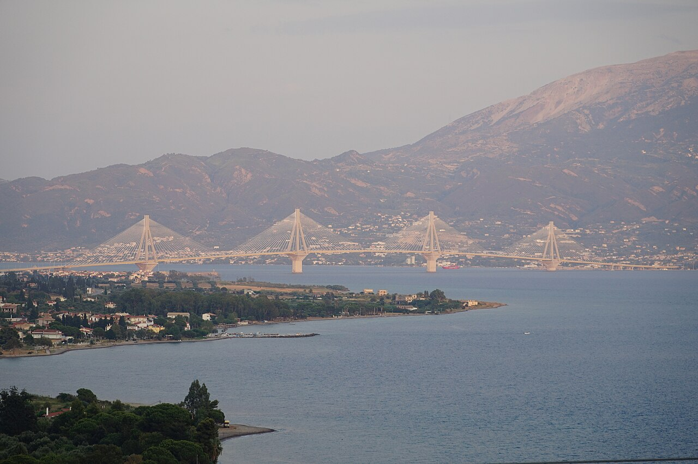
📷 Bekuletz · Public domain📍 07:00
Αναχώρηση από Αθήνα
Φύγετε με 100% μπαταρία (φόρτιση σπίτι το βράδυ). Ολυμπία Οδός → Γέφυρα Ρίου–Αντιρρίου → Ιόνια Οδός.
Άνοιγμα στο Google Maps ↗Τρ 27 – Πα 30 Οκτωβρίου 2026 · 2 ενήλικες · BYD Seal U (ηλεκτρικό)
📍 στάση · ⚡ φόρτιση · 🍽️ φαγητό · ↪️ εναλλακτικό · 🏨 ξενοδοχείο (TBD). Διαδρομές από OSRM/OpenStreetMap.
Αθήνα → Ιωάννινα
🚗 425 χλμ · ~5ω12΄ οδήγηση · ☁️ 14°/9° Ιωάννινα, ήλιος

📷 Bekuletz · Public domainΦύγετε με 100% μπαταρία (φόρτιση σπίτι το βράδυ). Ολυμπία Οδός → Γέφυρα Ρίου–Αντιρρίου → Ιόνια Οδός.
Άνοιγμα στο Google Maps ↗ΕΟ Αγρινίου–Αντιρρίου 5ο χλμ. Φτάνετε ~29%, βάζετε ~30 kWh (~35 λεπτά, ~€16 ως μέλος) + καφές. Εναλλακτικά DC στο West Parking της Γέφυρας (Blink).
Άνοιγμα στο Google Maps ↗Φτάνετε ~20%. Βάλτε το αμάξι στον AC 22 kW της ΔΕΗ blue στην Κ. Κανάρη (το Seal U παίρνει έως 11 kW) και περπατήστε. Ως το βράδυ ~+62 kWh → ~90%. Βγάλτε το μόλις γεμίσει (χρέωση αναμονής €0,12/λεπτό).
Άνοιγμα στο Google Maps ↗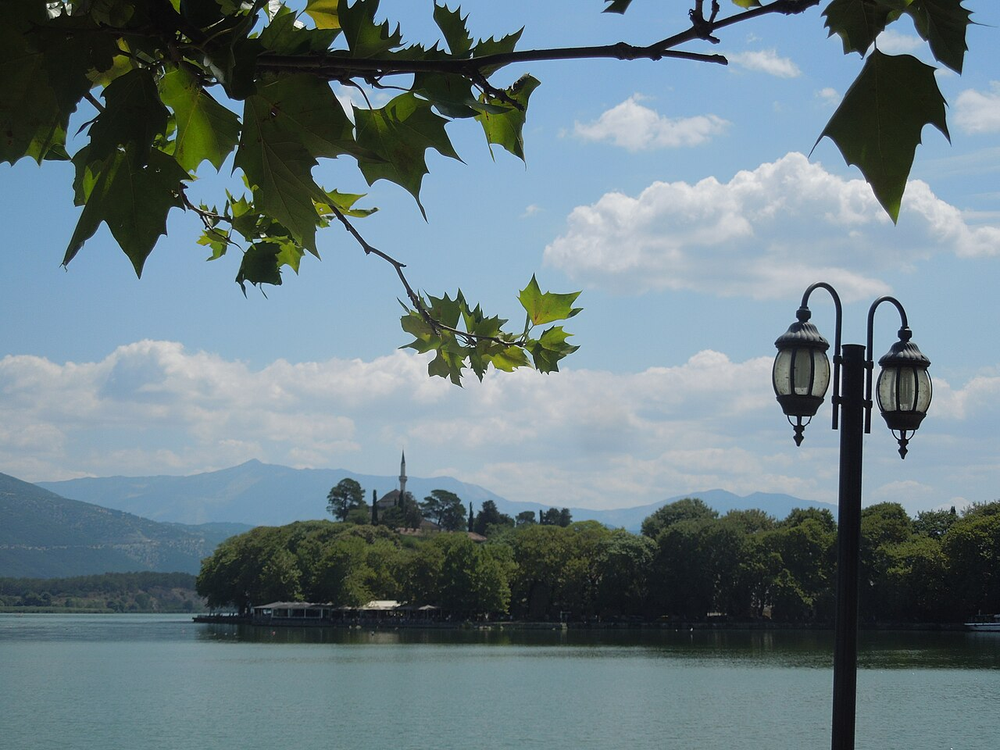
📷 Cosal · CC BY-SA 4.0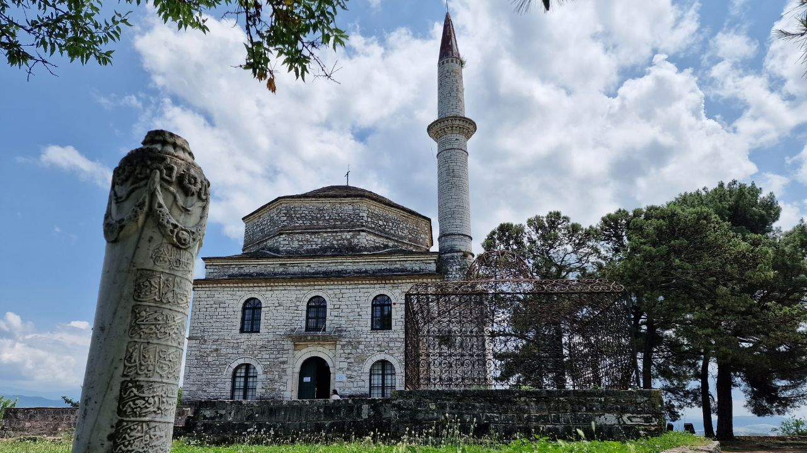
📷 DaveBriggs · CC BY-SA 4.0Φετιχιέ τζαμί, τάφος Αλή Πασά, ηλιοβασίλεμα ~17:40.
Άνοιγμα στο Google Maps ↗Ζαγόρι: γεφύρια, Μονοδένδρι, Βίκος
🚗 150 χλμ · ~3ω40΄ οδήγηση · ☁️ Μονοδένδρι 13°/5°
28η Οκτωβρίου: αργία, παρέλαση στην πόλη – φύγετε νωρίς. Μπαταρία ~90%, η μέρα θέλει ~30 kWh.
Άνοιγμα στο Google Maps ↗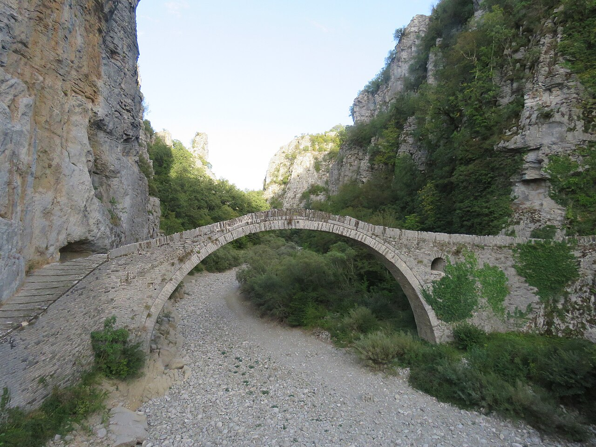
📷 Calistemon · CC BY-SA 4.0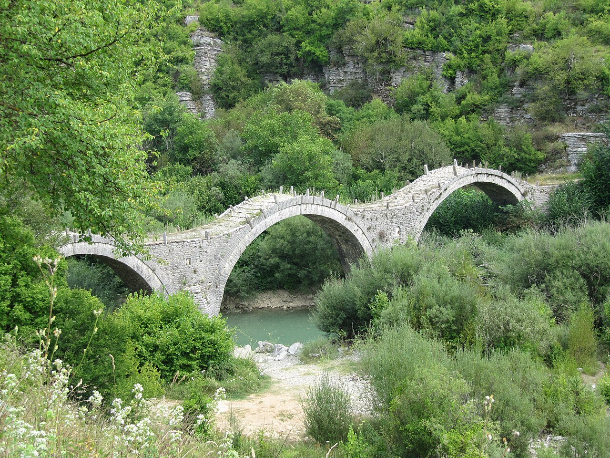
📷 Erik1980 · CC BY-SA 3.0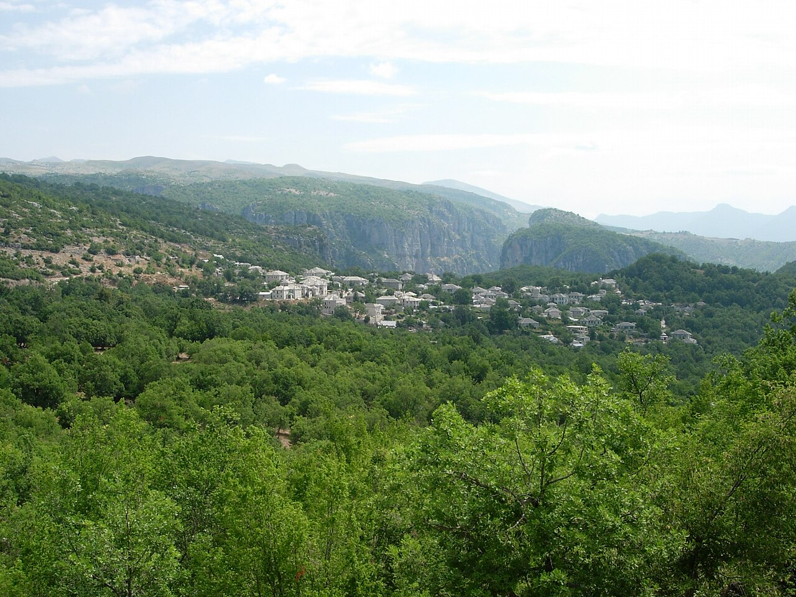
📷 No machine-readable author provided. Vincent C~commonswiki assumed (ba · CC BY-SA 3.0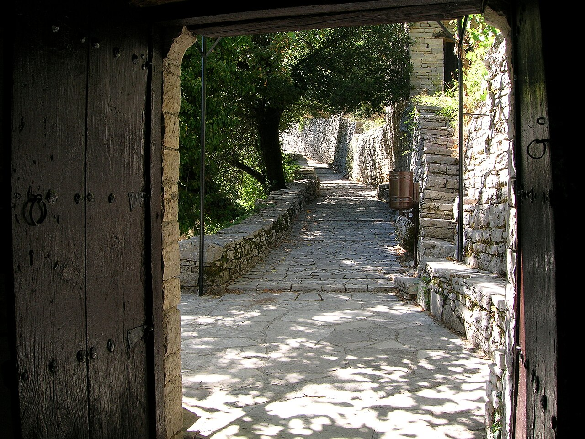
📷 Numenor · CC BY-SA 3.015 λεπτά μονοπάτι, κρέμεται πάνω από τη χαράδρα του Βίκου.
Άνοιγμα στο Google Maps ↗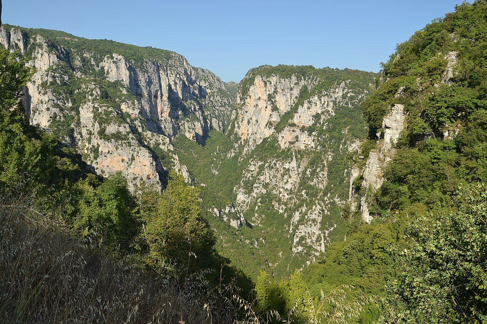
📷 Pudelek · CC BY-SA 4.0Το καλύτερο σημείο θέας, 7 χλμ. πάνω από το Μονοδένδρι.
Άνοιγμα στο Google Maps ↗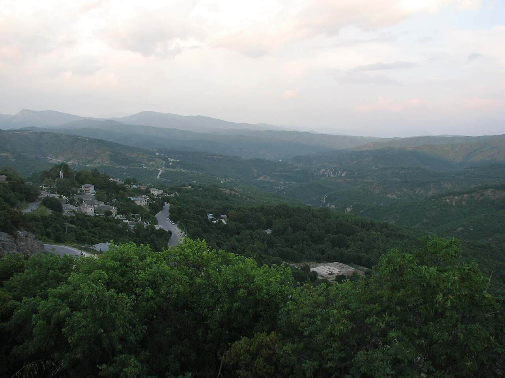
📷 Sergei Gussev · CC BY 2.0Πριν σκοτεινιάσει στις στροφές. Βράδυ: ταβέρνα Δωδώνη.
Άνοιγμα στο Google Maps ↗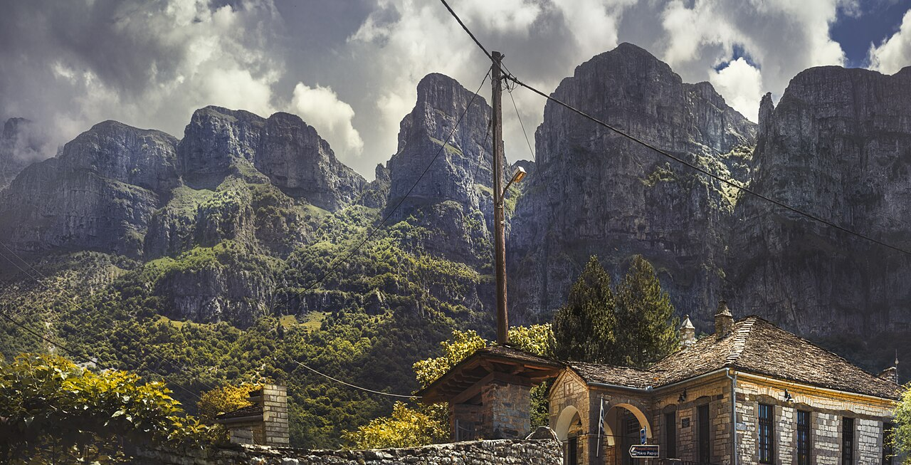
📷 Stathis floros · CC BY-SA 4.0Μόνο αν θέλετε μεγαλύτερη μέρα: +1 ώρα δρόμος και επιστροφή στο σκοτάδι.
Άνοιγμα στο Google Maps ↗Πέραμα, Νησάκι, (Μέτσοβο)
🚗 11 χλμ · ~0ω15΄ οδήγηση · ☁️ 20°/9°, στεγνά
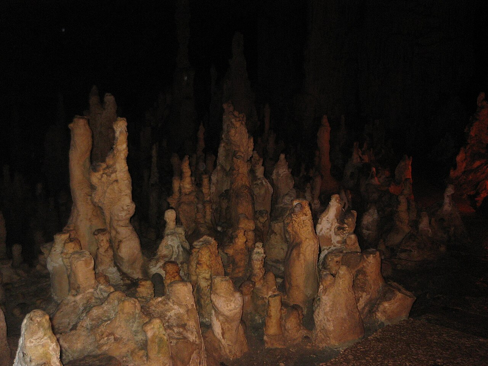
📷 arjenD · CC BY-SA 3.0€8/άτομο, 09:00–17:00, ξενάγηση ~45΄. 7 λεπτά από το κέντρο.
Άνοιγμα στο Google Maps ↗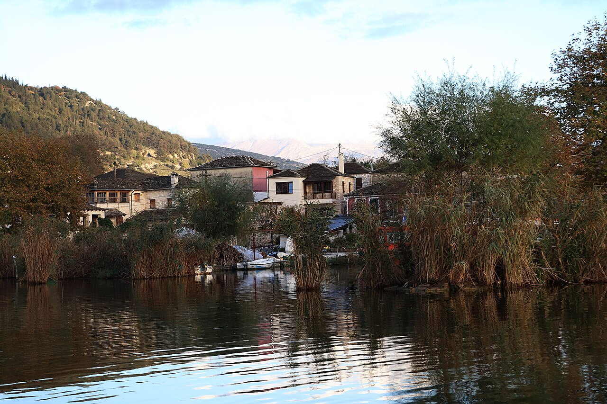
📷 DimitrisP67 · CC BY-SA 4.0€2,50/άτομο τη διαδρομή, από το Μώλο. Μουσείο Αλή Πασά, μονές, ψαροταβέρνες.
Άνοιγμα στο Google Maps ↗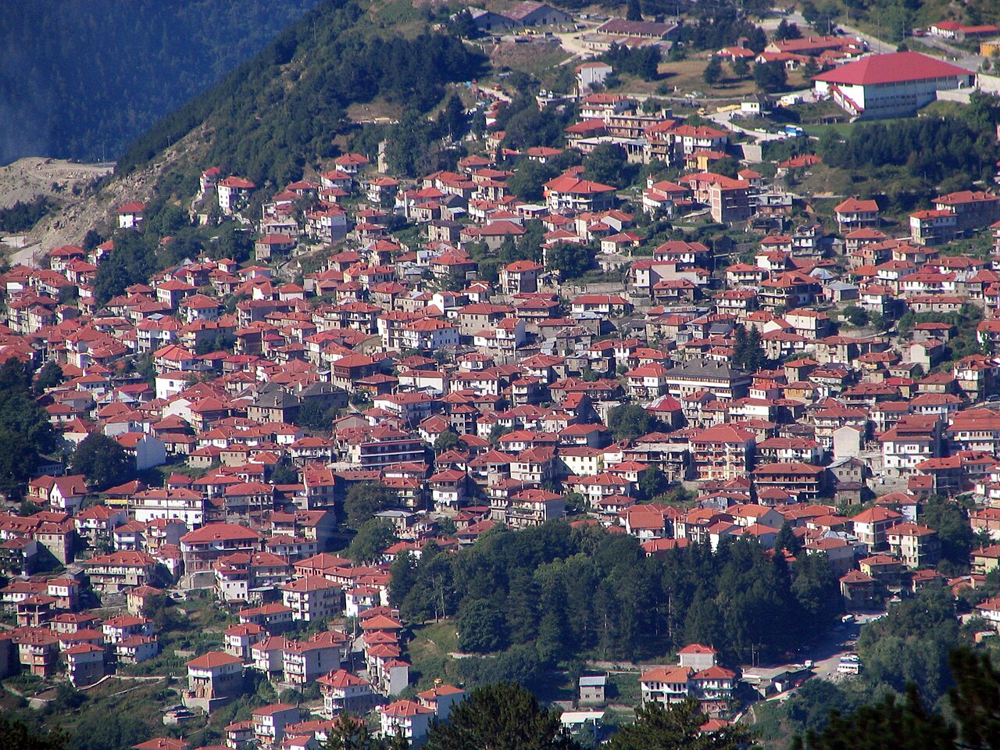
📷 Bogdan Giuşcă · CC BY-SA 3.051 χλμ./45΄. ~22 kWh πήγαινε-έλα. Πέμπτη στεγνός καιρός, κρύο (~9°C). Αλλιώς ξεκούραση.
Άνοιγμα στο Google Maps ↗Ιωάννινα → Αθήνα
🚗 425 χλμ · ~5ω14΄ οδήγηση · ☁️ 19°/10°, πιθανή βροχή στα βουνά
Μπαταρία ~30–55%. 4 ώρες AC ≈ +38 kWh (~€17) όσο παίρνετε πρωινό και μαζεύετε.
Άνοιγμα στο Google Maps ↗~35 kWh (~40 λεπτά, ~€19) + φαγητό. Φτάνετε Αθήνα ~10–15%.
Άνοιγμα στο Google Maps ↗BYD Seal U 87 kWh (2025): 87 kWh ωφέλιμη μπαταρία (LFP Blade), DC έως 140 kW, AC 11 kW. Πραγματική κατανάλωση: ~22,6 kWh/100 χλμ στα 110 χλμ/ώρα με ήπιο καιρό και 28,5 kWh με κρύο (EV Database), 26,4 kWh στα 120 χλμ/ώρα (Bjørn Nyland), 31,5 kWh στο τεστ αυτοκινητόδρομου του Green NCAP. Για τον σχεδιασμό χρησιμοποιούμε ~24 kWh/100 χλμ στην εθνική οδό (110–120 χλμ/ώρα, 10–15°C).
Σύνολο ενέργειας ταξιδιού ≈ 255 kWh: ~65 DC + ~100 AC (μπαταρία) + αρχικό γέμισμα στο σπίτι. Κόστος ≈ €95.
Ψάχνουμε ξενοδοχείο στο κέντρο των Ιωαννίνων, διαθέσιμο 27–30/10 για 2 ενήλικες, ιδανικά με φόρτιση ή πάρκινγκ κοντά στον AC φορτιστή της Κανάρη. Μόλις επιβεβαιωθεί, θα μπει εδώ με τιμή και link. Στο budget βάζουμε το εύρος €150–220 για 3 νύχτες από τις υποψήφιες επιλογές.
| Διόδια (πήγαινε-έλα, Ολυμπία + Γέφυρα + Ιόνια)44,70 × 2 | €89 |
| Ρεύμα: DC Αγρίνιο ×2 (~65 kWh, €0,52)μέλος ΔΕΗ blue | €35 |
| Ρεύμα: AC Ιωάννινα (~115 kWh από το δίκτυο, €0,40)0 € αν το ξενοδοχείο έχει δωρεάν φόρτιση | €46 |
| Ρεύμα: αρχική φόρτιση στο σπίτι (~90 kWh)εκτίμηση οικιακού τιμολογίου | €14 |
| Ξενοδοχείο 3 νύχτες (TBD)Υποψήφια: Gousias (Πέραμα) €152 · Zelinia (Βίτσα) €180 · Zagori Philoxenia (Μονοδένδρι, με πρωινό) €220 | €150–220 |
| Φαγητό & καφέδες για 2 (3,5 μέρες)οικονομικά ταβερνάκια | €180 |
| Είσοδοι: Πέραμα 16 + βάρκα 10 + μουσείο ~6 | €32 |
| Στάθμευση / διάφορα | €10 |
| Σύνολο | €556–626 |
Πώς πλησιάζει τα €400:
Με δωρεάν φόρτιση στο ξενοδοχείο, φθηνότερα μεσημεριανά και το Gousias βγαίνει ~€430–450. Με 2 νύχτες πέφτει γύρω στα €400.
Όλες οι φωτογραφίες είναι από το Wikimedia Commons με ελεύθερη άδεια. Χάρτης © OpenStreetMap contributors.